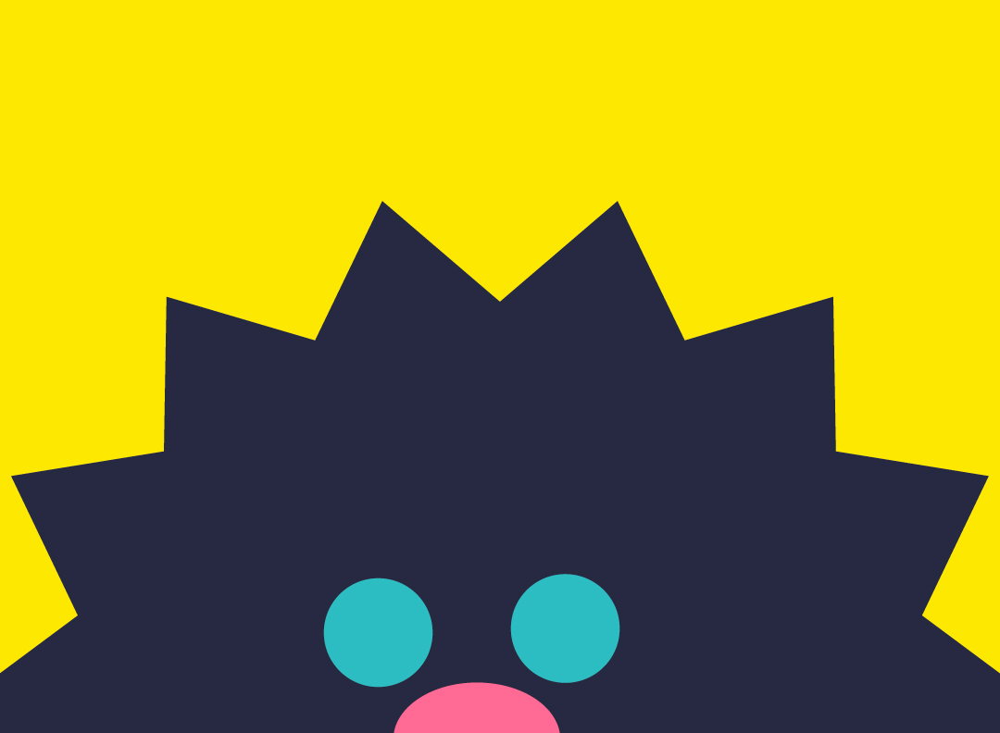
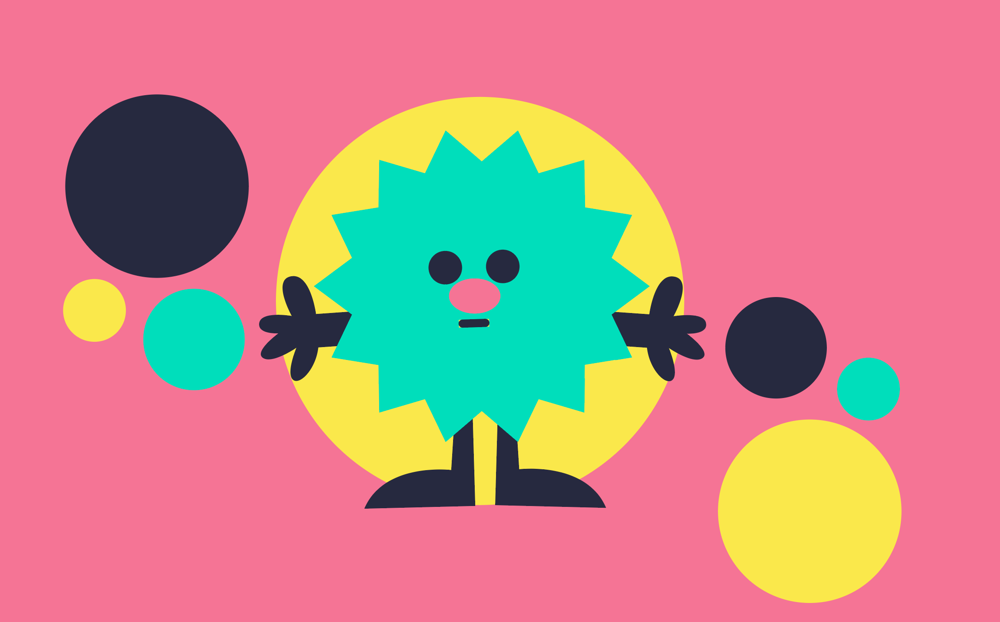
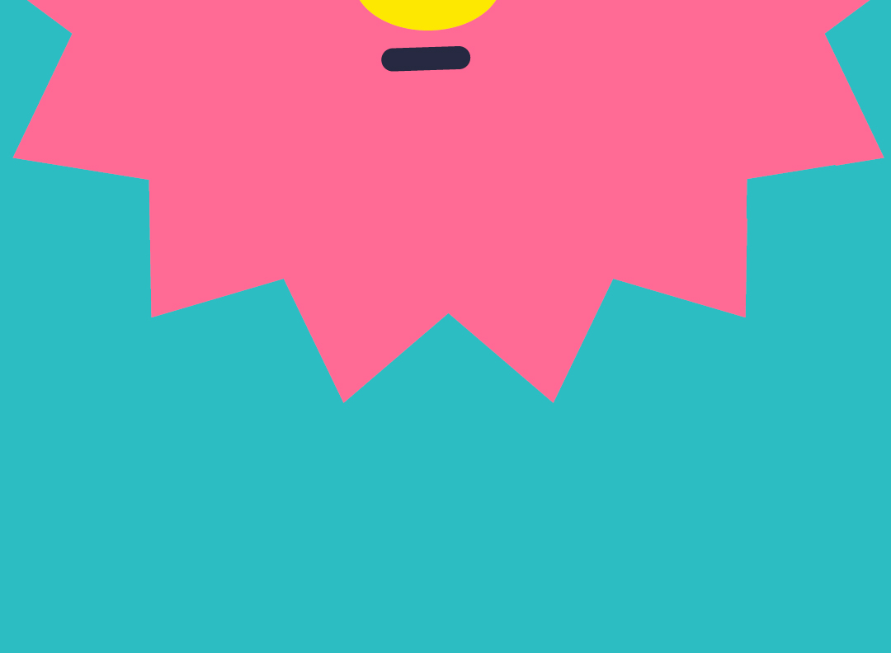

Limitless Drinks & Discovery
Here at Jitter Juice, we offer opportunities to collaborate with individuals around the globe to learn, create and inspire unique drink recipes. From coffee to energy drinks, we strive to motivate at home baristas to engage with their imaginations and welcome innovating ideas. Embark on this journey with us to expand the world of drink craftsmanship, whether if you are simply wanting to learn or want to share your expertise!
BRANDING
There are many traits about our brand that allow us to represent you! Our goal is to make our brand identity feel playful, experimental and welcoming to motivate the next generation of creatives to become innovative with drinks. Check out the main brand guidelines that make us jitter juice.
Discover MoreRECIPES

We have a couple of introductory recipes for you so you can get your foot through the door with your creativity! From earthy to gourmand flavor notes, you get to choose what feels right. See the first eight recipes provided and as you fulfill your expertise, we encourage you to expand your palette.
Discover MoreABOUT US
We care about the quality of our community and staying responsive. spotlight features on community submissions, Jitter Juice pushes both beginners and enthusiasts to experiment with new techniques and flavors. Learn more about our back story, why it was created and the owner's mission statement.
Discover MoreWORKS CITED
Our inspiration is redirected towards you and the community we've built together. We often find ourselves referencing and critiquing the energy of in-person cafes. If you're curious about where we source our research, click on the link to discover our personal influences.
Discover More